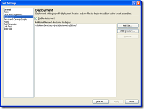

|
|
Archive for September, 2010
Monday, September 27th, 2010
Earlier this month, I posted Entity Framework and the Repository Pattern. Mickey posted that code on GitHub, along with his own Linq to SQL implementation.
For those new to Git, here’s how you can get Mickey’s repository:
Mickey took the time to complete the story for me. I posted only enough code to make my point (which was, BTW, that the Repository Pattern takes more work than you might expect). Mikey reverse engineered the database that I used for my example, and even populated it with data from this blog. Wow!
Now let’s review his work.
Tests
 Mickey not only includes unit test (the motivation for my original post), but also integration tests. Just open the solution and hit Ctrl+R, A to run all tests. If you find that the tests don’t deploy the database file, double-click the Local.testsettings file and add the dbf to the Deployment section. I found that the tests passed before I turned on code coverage, but then I had to make this change.
I enabled code coverage and found that he achieves 92%-100% in all modules except for the generated code. The reason that it is not 100% is mostly due to the fact that my original tests didn’t add anything to the repository.
Two sets of data types
The goal of the original post was not persistence ignorance, it was testing. But persistence ignorance is often a reason for using the Repository Pattern. Mickey’s solution is not persistence ignorant, either.
If you look in the Data project, you will see NoteworthyEntitiesL2SModel.dbml and NoteworthyEntitiesEFModel.edmx. That is, he used both EF and L2S to generate models from the database. This created two separate sets of data types.
This division necessarily permeates the solution, since those generated data types are exposed from the repository. As a result, he has a separate memory provider for each data access technology. The EF memory provider expects ObjectContext and ObjectQuery. The L2S memory provider replaces those with DataContext and Table.
Both of the memory providers have unit tests. They distinguish between the two by namespace. EF and L2S use different strategies for naming associative tables, but other than that the code looks the same.
In practice, you will typically choose one data access technology, so this lack of persistence ignorance is not a problem. But if it bothers you, please look into POCO support for EF and L2S to see if there’s a way to remove the dependency upon the data access technology.
Thank you, Mickey
I am quite impressed with the effort that Mickey put into packaging this example and making it available to us. He took code that only worked on my machine and filled in the missing components so that we can all run the tests. And he took what was working for Entity Framework and ported it to Linq to SQL so that you have the choice. Now, either way you go, you can test your data services.
Thanks, man.
Posted in DDD, Entity Framework, Unit testing | No Comments »
Sunday, September 26th, 2010
As a follow up to the demonstration of Correspondence on Windows Phone 7, I’ve added a feature to the Reversi app. This demonstrates the cadence of coding with Correspondence.
The cadence is:
- Fact
- Community
- Query
- View Model
First, you define a fact in the model. A fact represents an action taken by a user. It is a fact that a player sent a message in a game.
Second, you add that fact to the community. When the user presses “Send”, call Community.AddFact(new Message()).
Third, you write a query in a related fact. Query a game for all of the messages.
Fourth, you expose that query through the view model. Data bind to the collection of messages.
Watch this video for an example of that code cadence as I add the chat feature to Reversi, both in WPF and in Windows Phone 7.
Coding Correspondence on WP7 and WPF from Michael L Perry on Vimeo.
Bonus question: what step is usually part of a client\server application that you do not see in this cadence?
Posted in Synchronization | No Comments »
Sunday, September 26th, 2010
Correspondence is the ideal platform for creating phone applications. Express your model once, and it generates local storage and network communications. Here’s a demo of Reversi running on Windows Phone 7, and a quick walkthrough of the code.
Correspondence on Windows Phone 7 from Michael L Perry on Vimeo.
Posted in Synchronization | No Comments »
Friday, September 24th, 2010
This is a little obscure. I’m writing a Windows service that can be controlled via WMI. I use Log4Net to log all of the service’s activities. I can see logs from the service starting up and doing its regular processing, but I can’t see logs from WMI commands.
In addition, when the WMI command tells the service to access a resource (eg. load a configuration file or walk a directory tree), the command fails. WMI error messages aren’t much help (“Not found” anybody? How about “The RPC server is unavailable.”) And with logging not working, I have to attach the debugger to see what’s happening.
Cancel impersonation
The reason for both of these problems is that the WMI user doesn’t have access to either the log file or the resource I’m trying to access. The solution, cancel impersonation:
public class CancelImpersonation : IDisposable
{
private WindowsImpersonationContext _impersonationContext;
public CancelImpersonation()
{
_impersonationContext = WindowsIdentity.Impersonate(IntPtr.Zero);
}
public void Dispose()
{
_impersonationContext.Undo();
}
}
Wrap one of these in a using statement, then anything you do in the brackets is running as local system (or whatever user the service is configured to run as).
Posted in C# | No Comments »
Thursday, September 23rd, 2010
On two prior occasions, I have given TDD a test drive. Neither attempt convinced me that it was a useful way to design a system. To me, TDD has always stood for Top Down Design.
On the first attempt way back in 2006, I added a step to the Red Green Refactor cadence. I Redrew the design diagram before Green. My observation was that tests are no substitute for visualizing the solution.
On the second attempt in January 2009, I used TDD to design and construct a web navigation framework. It had three intersecting axes: URL mapping, security, and menu hierarchy. It ended up being extremely well tested, but incredibly complex. It worked, and continues to work, but it defies understanding.
Last month I began attending Dallas Geek Night at ThoughtWorks. This is a weekly meetup where open-source developers pair up and work on each other’s projects. I’ve used this opportunity to improve the tests for both Update Controls and Correspondence.
All of the work is done in pairs, and all of it is test driven.
Question and answer
On that first day, I paired with Richard Jensen, one of the organizers of the event. He asked questions about Update Controls. We answered those questions with tests.
For example, does Update Controls notify when something doesn’t actually change?
[TestMethod]
public void WhenSortOrderIsChangedButNotDifferentWeShouldNotGetACollectionChanged()
{
ContactViewModel defaultOrder = _viewModel.Contacts.First();
_viewModel.SortOrder = ContactListSortOrder.FirstName;
ContactViewModel firstByFirstName = _viewModel.Contacts.First();
_viewModel.SortOrder = ContactListSortOrder.FirstName;
Assert.AreEqual(1, _collectionChangedCount);
}
At first this test failed. Then we added this code to make it pass:
public ContactListSortOrder SortOrder
{
get
{
_indSortOrder.OnGet();
return _sortOrder;
}
set
{
if (_sortOrder != value) _indSortOrder.OnSet();
_sortOrder = value;
}
}
I could have just answered the question, but this helped keep the discussion measureable. A simple answer would have just been based on faith, and could even have been wrong.
Finding bugs
On the second day, I paired with Dhruv Chandna. We were testing Correspondence synchronizing between two machines. He asked some good questions, too.
For example, what would happen if I added a fact to the opposite community:
[TestMethod]
public void WhenLogOnToOtherMachine_ShouldThrow()
{
Machine playerOneMachine = _playerOneCommuniy.AddFact(new Machine());
User playerOne = _playerOneCommuniy.AddFact(new User("one"));
try
{
_playerTwoCommuniy.AddFact(new LogOn(playerOne, playerOneMachine));
Assert.Fail("AddFact did not throw.");
}
catch (CorrespondenceException ex)
{
Assert.AreEqual("A fact cannot be added to a different community than its predecessors.", ex.Message);
}
}
This error should have been caught. It was not. So after writing this failing test, Dhruv dug into the code base and fixed it.
foreach (RoleMemento role in prototype.PredecessorRoles)
{
PredecessorBase predecessor = prototype.GetPredecessor(role);
if (predecessor.Community != null && predecessor.Community != _community)
throw new CorrespondenceException("A fact cannot be added to a different community than its predecessors.");
}
There were a few other changes required to make this work, but they did not significantly impact the design.
TDD as communication
Dan North says TDD is not about testing, it’s all about design. My experience tells me otherwise. Whenever I’ve let my design emerge through tests, I’ve ended up with an overly complex mess. It’s like pouring concrete into a mold. It takes the right shape because it is forced to. But the results are not as pretty as a sculpture.
Instead, I’m beginning to see TDD as a form of communication. This helps a pair to discuss a problem in tangible terms. It gives them something to point to. And it gives you a specific goal so that the conversation doesn’t get derailed. You are done when the test passes.
So I will continue to construct top-down designs. I will continue to use unit tests to verify my implementation of those designs. But when I pair, we will communicate through TDD.
Posted in Agile, Unit testing | No Comments »
Friday, September 17th, 2010
In January I created a unit test helper called Predassert. The goal of this library was to make assertions more readable, both in code and in test results. I wanted to turn this:
Assert.AreEqual(3, theResult);
Into this:
Pred.Assert(theResult, Is.EqualTo(3));
And to turn this:
System.InvalidOperationException: Sequence contains no matching element
Into this:
Microsoft.VisualStudio.TestTools.UnitTesting.AssertFailedException: Assert.Fail failed. The collection contains no matching element.
The property Name is not correct. Expected ThisOne, actual ThatOne.
It started out harmless enough. I created classes with names like “Is”, “Contains”, and “Has”. These had methods like “SameAs”, “That”, and “Property”. I was able to string together grammatically correct sentences that were at once predicates and assertions (hence the name). Things were fine, it’s the dress that makes you look fat, and I can quit anytime I want.
Then I paired with Paul Hammant at ThoughtWorks. I had to show him this:
Pred.Assert(result.Facts, Contains<Fact>.That(
Has<Fact>.Property(fact => fact.Members, Contains<FactMember>.That(
KindOf<FactMember, DataMember>.That(
Has<DataMember>.Property(field => field.Name, Is.EqualTo("players")) &
Has<DataMember>.Property(field => field.Type,
Has<DataType>.Property(type => type.Cardinality, Is.EqualTo(Cardinality.Many)) &
KindOf<DataType, DataTypeFact>.That(
Has<DataTypeFact>.Property(type => type.FactName, Is.EqualTo("User")) &
Has<DataTypeFact>.Property(type => type.IsPivot, Is.EqualTo(true))
)
) &
Has<DataMember>.Property(field => field.LineNumber, Is.EqualTo(4))
)
))
));
When this test fails, this is the result.
Microsoft.VisualStudio.TestTools.UnitTesting.AssertFailedException: Assert.Fail failed. The collection contains no matching element.
The property Members is not correct. The collection contains no matching element.
The property Type is not correct. The property IsPivot is not correct. Expected True, actual False.
How did it ever come to this?
After some gentle suggestions from Paul, the test looks like this.
string code =
"namespace Reversi.GameModel; " +
" " +
"fact Game { " +
" publish User *players; " +
"} ";
Namespace result = ParseToNamespace(code);
Field players = result.WithFactNamed("Game").WithFieldNamed("players");
Assert.IsInstanceOfType(players.Type, typeof(DataTypeFact));
Assert.IsTrue(((DataTypeFact)players.Type).IsPivot, "The players field is not a pivot.");
And the test failure reads:
Assert.IsTrue failed. The players field is not a pivot.
If you ever want to see the abomination that was Predassert, you will have to dig through the revision history of Correspondence.
Posted in Unit testing | No Comments »
Thursday, September 9th, 2010
When I’ve asked how to unit test Entity Framework, the best answer was “use the Repository pattern to encapsulate your EF code” (thanks Andrew Peters). I recently asked the same thing about RIA Services. Mike Brown responded with the same advice, even going so far as to spend a couple of hours with me on Live Meeting.
Since all you gotta do is implement the Repository Pattern, it should be easy, right? Let’s take a look at a minimalist implementation.
Inject the implementation
To support unit testing, we need to be able to swap out our implementation. At the top level, the consumer of a repository begins a unit of work. So we’ll inject a unit of work factory.
public interface IUnitOfWorkFactory
{
IUnitOfWork Begin();
}
public class NoteworthyService
{
private IUnitOfWorkFactory _unitOfWorkFactory;
public NoteworthyService(IUnitOfWorkFactory unitOfWorkFactory)
{
_unitOfWorkFactory = unitOfWorkFactory;
}
}
Identify the repository
In DDD we create one repository per aggregate root, which is the entity from which you begin the query. In EF, entities exist in a container. So we’ll take two steps to get the repository via the container.
public interface IUnitOfWork : IDisposable
{
IContainer<TContainer> UsingContainer<TContainer>()
where TContainer : ObjectContext, new();
}
public interface IContainer<TContainer> : IDisposable
{
IRepository<TEntity> GetRepository<TEntity>(Func<TContainer, ObjectQuery<TEntity>> repositorySelector)
where TEntity : EntityObject;
}
Provide a specification
The second half of the Repository Pattern is the Specification. A specification identifies which entities to pull from the repository. In Linq, we use lambdas for that. So a repository should be able to give you back some entities when given a lambda.
public interface IRepository<TEntity>
{
IQueryable<TEntity> GetSatisfying(Expression<Func<TEntity, bool>> specification);
void Add(TEntity entity);
}
Query the repository
With those interfaces in place, here’s what a query looks like.
public List<Article> GetArticlesByTopic(string topicName)
{
using (var unitOfWork = _unitOfWorkFactory.Begin())
{
return unitOfWork.UsingContainer<NoteworthyEntities>().GetRepository(container => container.Articles)
.GetSatisfying(article => article.Topics.Any(topic => topic.TopicName == topicName))
.ToList();
}
}
Implement in memory
For unit testing, we implement the repository interfaces using in-memory lists.
public class MemoryUnitOfWorkFactory : IUnitOfWorkFactory
{
private MemoryUnitOfWork _unitOfWork = new MemoryUnitOfWork();
public IUnitOfWork Begin()
{
return _unitOfWork;
}
}
public class MemoryUnitOfWork : IUnitOfWork
{
private Dictionary<Type, object> _containerByType = new Dictionary<Type, object>();
public IContainer<TContainer> UsingContainer<TContainer>()
where TContainer : ObjectContext, new()
{
object container;
if (!_containerByType.TryGetValue(typeof(TContainer), out container))
{
container = new MemoryContainer<TContainer>();
_containerByType.Add(typeof(TContainer), container);
}
return (IContainer<TContainer>)container;
}
public void Dispose()
{
}
}
public class MemoryContainer<TContainer> : IContainer<TContainer>
where TContainer : ObjectContext, new()
{
private Dictionary<Type, object> _containerByType = new Dictionary<Type, object>();
public IRepository<TEntity> GetRepository<TEntity>(Func<TContainer, ObjectQuery<TEntity>> repositorySelector)
where TEntity : EntityObject
{
object container;
if (!_containerByType.TryGetValue(typeof(TEntity), out container))
{
container = new MemoryRepository<TEntity>();
_containerByType.Add(typeof(TEntity), container);
}
return (IRepository<TEntity>)container;
}
public void Dispose()
{
}
}
public class MemoryRepository<TEntity> : IRepository<TEntity>
where TEntity : EntityObject
{
private List<TEntity> _entities = new List<TEntity>();
public IQueryable<TEntity> GetSatisfying(Expression<Func<TEntity, bool>> specification)
{
return _entities.Where(specification.Compile()).AsQueryable();
}
public void Add(TEntity entity)
{
_entities.Add(entity);
}
}
And here’s what a unit test looks like.
[TestClass]
public class NoteworthyServiceTest
{
private NoteworthyService _noteworthyService;
[TestInitialize]
public void Initialize()
{
IUnitOfWorkFactory memory = new MemoryUnitOfWorkFactory();
IRepository<Article> articlesRepository = memory.Begin()
.UsingContainer<NoteworthyEntities>()
.GetRepository(container => container.Articles);
Topic ddd = new Topic()
{
TopicName = "ddd"
};
Topic corresopndence = new Topic()
{
TopicName = "correspondence"
};
Article efRepository = new Article()
{
Title = "Entity Framework and the Repository Pattern"
};
efRepository.Topics.Add(ddd);
Article correspondenceLaunch = new Article()
{
Title = "Correspondence Launch"
};
correspondenceLaunch.Topics.Add(corresopndence);
Article correspondenceDDD = new Article()
{
Title = "Correspondence and DDD"
};
correspondenceDDD.Topics.Add(ddd);
correspondenceDDD.Topics.Add(corresopndence);
articlesRepository.Add(efRepository);
articlesRepository.Add(correspondenceLaunch);
articlesRepository.Add(correspondenceDDD);
_noteworthyService = new NoteworthyService(memory);
}
[TestMethod]
public void QueryReturnsArticles()
{
var articles = _noteworthyService.GetArticlesByTopic("ddd").ToArray();
Assert.AreEqual("Entity Framework and the Repository Pattern", articles[0].Title);
Assert.AreEqual("Correspondence and DDD", articles[1].Title);
}
}
Implement with Entity Framework
Finally, we implement the real thing using Entity Framework.
public class EntityFrameworkUnitOfWorkFactory : IUnitOfWorkFactory
{
public IUnitOfWork Begin()
{
return new EntityFrameworkUnitOfWork();
}
}
public class EntityFrameworkUnitOfWork : IUnitOfWork
{
private Dictionary<Type, IDisposable> _containerByType = new Dictionary<Type, IDisposable>();
public IContainer<TContainer> UsingContainer<TContainer>()
where TContainer : ObjectContext, new()
{
IDisposable container;
if (!_containerByType.TryGetValue(typeof(TContainer), out container))
{
container = new EntityFrameworkContainer<TContainer>();
_containerByType.Add(typeof(TContainer), container);
}
return (IContainer<TContainer>)container;
}
public void Dispose()
{
foreach (var container in _containerByType.Values)
container.Dispose();
}
}
public class EntityFrameworkContainer<TContainer> : IContainer<TContainer>
where TContainer : ObjectContext, new()
{
private TContainer _container;
public EntityFrameworkContainer()
{
_container = new TContainer();
}
public IRepository<TEntity> GetRepository<TEntity>(Func<TContainer, ObjectQuery<TEntity>> repositorySelector)
where TEntity : EntityObject
{
return new EntityFrameworkRepository<TContainer, TEntity>(_container, repositorySelector(_container));
}
public void Dispose()
{
_container.Dispose();
}
}
public class EntityFrameworkRepository<TContainer, TEntity> : IRepository<TEntity>
where TContainer : ObjectContext, new()
where TEntity : EntityObject
{
private TContainer _container;
private ObjectQuery<TEntity> _objectQuery;
public EntityFrameworkRepository(TContainer container, ObjectQuery<TEntity> objectQuery)
{
_container = container;
_objectQuery = objectQuery;
}
public IQueryable<TEntity> GetSatisfying(Expression<Func<TEntity, bool>> specification)
{
return _objectQuery.Where(specification);
}
public void Add(TEntity entity)
{
_container.AddObject(_objectQuery.Name, entity);
}
}
Analysis
This is the smallest implementation of the Repository pattern that I could come up with. It is obviously not feature complete. For example, it does not implement Delete, nor does it allow you to specify eager loading with Include. There are other implementations that are bigger, but I doubt that there could be one smaller. Even at this size, this doesn’t qualify as “all you need to do is”.
One benefit of the Repository pattern is supposed to be that it abstracts the persistence mechanism. But this implementation returns EntityObjects, which are a distinctly Entity Framework-ish data type. I could try for a POCO compliant implementation to solve that problem.
Because this implementation requires EntityObjects, it could never work with RIA Services. I would have to write a different Repository implementation to unit test my client code.
And finally, Entity Framework does some things that the in-memory repository does not. My unit tests can’t verify that I’m using EF correctly. For example, Entity Framework does eager loading if I explicitly request it. The in-memory implementation always has all navigation properties populated. Because of this difference, I can’t verify with a unit test that I have included all of the required navigations.
Conclusion
All of this leads me to conclude that the Repository pattern is not the best way to add testability to an untestable framework. The framework needs to be testable from the beginning. If Entity Framework had provided an in-memory implementation for testing, then I could test my use of EF, including eager loading.
By the way, Correspondence does in fact provide an in-memory implementation for unit testing. Please go through the lessons to see what I think a testable framework should look like.
Posted in DDD, Entity Framework, Unit testing | 6 Comments »
Tuesday, September 7th, 2010
When viewing reports within an application, the application can provide context that SSRS otherwise would not have. With this context the experience of using the application can be better than the report manager. Parameters that the user would otherwise have to set for every report can be assigned programmatically.
In my case, the logged-in user belongs to a medical practice. Every report takes the practice ID as a parameter, called “Domain”. I want to pass that parameter without the user ever seeing it.
Render the menu
Earlier, we wrote code to navigate the reports. Let’s display this structure in a hierarchy.
public string GetMenu()
{
StringBuilder result = new StringBuilder();
WriteItems(result, ReportNavigator.GetRootFolder(_credentials).Items);
return result.ToString();
}
private static void WriteItems(StringBuilder result, IEnumerable<Item> items)
{
foreach (Item item in items)
{
Folder subFolder = item as Folder;
if (subFolder != null)
{
WriteFolder(result, subFolder);
continue;
}
Report report = item as Report;
if (report != null)
{
WriteReport(result, report);
continue;
}
}
}
private static void WriteFolder(StringBuilder result, Folder folder)
{
if (folder.ContainsAnyReport)
{
result.Append(String.Format("<li class=\"folder\">{0}: {1}<ul>",
HttpUtility.HtmlEncode(folder.Name),
HttpUtility.HtmlEncode(folder.Description)));
WriteItems(result, folder.Items);
result.Append("</ul></li>");
}
}
private static void WriteReport(StringBuilder result, Report report)
{
result.Append(String.Format("<li class=\"report\"><a href=\"ViewReport.aspx?Path={1}\">{0}: {2}</a></li>",
HttpUtility.HtmlEncode(report.Name),
HttpUtility.UrlEncode(report.Path),
HttpUtility.HtmlEncode(report.Description)));
}
This mutually-recursive set of methods renders a tree of unordered lists. It shows only the folders that contain a report. When it gets down to a report, it renders a link to the ViewReport page. This is our page containing a report viewer control.
Display the report
The ViewReport page simply contains a report viewer control. Page_Load sets the path, the credentials, and the Domain parameter.
protected void Page_Load(object sender, EventArgs e)
{
_path = Request["Path"];
if (Request.HttpMethod == "GET" && !string.IsNullOrEmpty(_path))
{
ReportViewer1.ServerReport.ReportPath = _path;
_reportTitle = _path.Split('/').LastOrDefault();
// MLP: Get the user's credentials from forms auth.
IIdentity identity = HttpContext.Current.User.Identity;
FormsIdentity formsIdentity = (FormsIdentity)identity;
string username = formsIdentity.Name;
string encryptedPassword = formsIdentity.Ticket.UserData;
// MLP: Decrypt the password.
byte[] usernameHash = Crypto.ComputeStringHash(username, _hashAlgorith);
byte[] encryptedMessage = Convert.FromBase64String(encryptedPassword);
string password = Crypto.DecryptMessage(encryptedMessage, _symmetricAlgorithm, _key, usernameHash);
NetworkReportServerCredentials credentials = new NetworkReportServerCredentials(username, password, "ABSG");
ReportViewer1.ServerReport.ReportServerCredentials = credentials;
string domain = GetDomainOfUser(username);
ReportParameterInfoCollection parameters = ReportViewer1.ServerReport.GetParameters();
if (parameters.Any(p => p.Name == "Domain" && p.DataType == ParameterDataType.String))
ReportViewer1.ServerReport.SetParameters(new ReportParameter("Domain", domain, false));
}
}
The app looks up the domain based on the user name. Then it checks the parameters to see if this report accepts “Domain”. If so, it sets it.
The “false” in the ReportParameter tells the report viewer to hide the parameter from the user. If it were “true”, the user would still see the parameter, even though it was set to a default value.
Now my business administrators can create any report they need in SSRS report manager. Their report will appear on the menu automatically. If they follow the convention and specify a “Domain” parameter, the report will be context sensitive. This gives the end user of my application be best experience possible.
Posted in Reports | No Comments »
Monday, September 6th, 2010
If you update Drupal or one of its modules and you get the following error on a white page with no style:
warning: array_map() [function.array-map]: Argument #2 should be an array in system.module on line 1015
It means that your theme is no longer enabled.
I updated Drupal using the instructions Upgrading Drupal rapidly using SSH/Shell commands. This is an excellent resource. Take the time to follow all of the steps, including making backups! It’s the backup that allowed me to quickly resolve the issue.
The instructions preserve the sites folder, but not the themes folder. I created a custom theme for my wife’s blog. When upgrading Drupal, this custom theme was backed up, but not applied to the new installation.
The discussion on this issue report led me to look at the Themes admin page, where I discovered that the custom theme was no longer listed. I copied the theme from the backup (cp -r d-backup/themes/mtheme/ themes/) and refreshed the page. The theme was listed, but not enabled. I enabled it, set it to the default, and checked the site again. The issue was resolved.
Overall, I like Drupal. But it suffers from its PHP foundation. In general, it does a good job of abstracting the user from the PHP underpinnings, but when it breaks, it breaks hard.
Posted in Drupal | No Comments »
|

{kind=link}